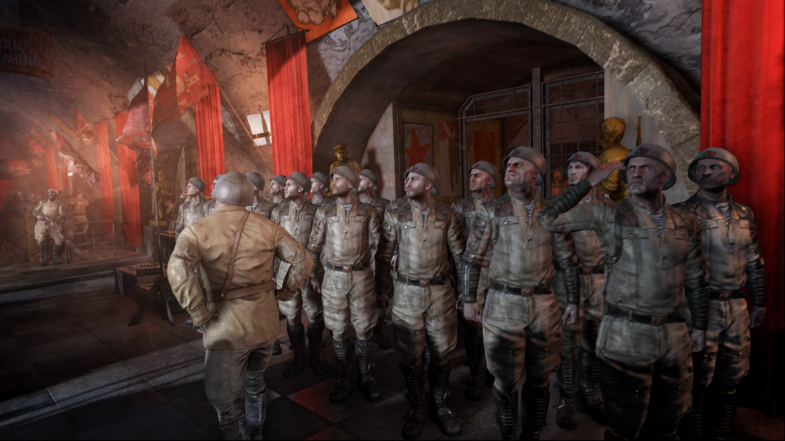

•Красная линия• |
|---|
|
Союз Советских Социалистических Станций (почти всегда упоминается устоявшееся название Красная Линия) — значимая организация Московского метрополитена. Одно из ведущих «сверхгосударств», по численности населения превосходящее даже Ганзу, Красная линия находится в состоянии постоянного конфликта с гораздо меньшим, но более продвинутым в военном отношении нацистским режимом, известным как Четвёртый Рейх. Красная Линия зародилась на Сокольнической линии — первой линии Московского метро, в народе обычно называемой «красной». Это, в сочетании с социалистическим характером государства и ассоциацией красного цвета с коммунизмом, объясняет довоенное происхождение названия. Государство охватывает значительную часть Сокольнической линии и несколько станций-спутников соседних веток — Площадь Революции и присоединённые в 2035 году станции Театральная, Кузнецкий Мост, Сретенский бульвар и Тургеневская. Станция Библиотека имени Ленина, по окончанию войны с Ганзой переданная в собственность Полису, разрезает Красную линию на две части. Юго-западные владения красных заканчиваются на Спортивной, при этом официальное руководство коммунистов категорически не признаёт действующие границы, считая станции за метромостом своей законной территорией |